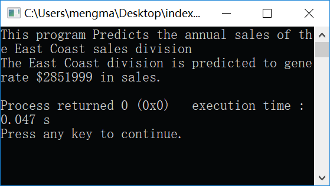
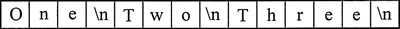
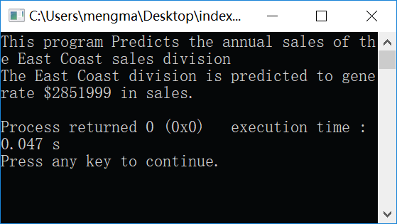
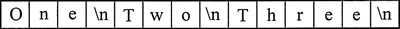

首页 > 编程笔记
C++ cout输出语句用法详解
cout 可用于在计算机屏幕上显示信息，程序可以显示的最简单的屏幕输出类型是控制台输出，它只是纯文本。

图 1 控制台窗口
cout 被分类为流对象，这意味着它是使用数据流的。要在屏幕上打印消息，则可以发送一串字符到 cout。还是来看一下下列程序中的第 7 行：
流插入运算符总是写为两个小于号，它们之间没有空格。因为正在使用它将数据流发送到 cout 对象，所以可以将流插入运算符视为必须指向 cout 的箭头，如下所示。
以下程序显示的还是用另一种方式来完成同样的事情：
理解此程序的一个重要概念是：尽管输出被分成两个编程语句，但该程序仍将在单行上显示该消息。除非另有说明，否则发送给 cout 的信息将以连续的流显示。有时这可能会产生不太理想的结果，下面的程序说明了这一点：
其次，虽然在源代码中输出的字符串被分成 5 行，但是最终输出的结果却只有一个长字符串。因为字符串太长一行显示不完，所以在显示时才会绕到第 2 行。造成这种输出结果的原因是 cout 不会开始新的一行，除非告诉它这样做。
有两种方法可以指示 cout 开始新的一行。第一种方法是给 cout 发送一个名为 endl（发音为“end-line”或“end-L”）的流操作符，如下面的程序所示：
每次 cout 遇到一个 endl 流操作符，它将输出提前到下一行的开始，以便后续打印。操作符可以插入到发送给 cout 的字符串中的任何位置，只要它在双引号之外。请注意，endl 也在最后一行的输出结尾使用。
使后续输出在新行上开始的第2种方法是在要输出的字符串中插入 \n。下面程序就是 这样做的：
当 cout 在字符串中遇到 \n 时，它不会在屏幕上打印，而是将其解释为一个特殊的命令，将输出光标推到下一行。有些人可能已经注意到插入转义序列比插入 endl 要少，这就是为什么一些程序员更喜欢它的原因。
转义序列使程序员能够更好地控制程序输出信息的方式。表 1 列出了若干个常用的转义序列。
刚开始学习 C++ 的学生容易犯的一个常见错误是在尝试写入转义序列时使用正斜杠（/）而不是反斜杠（\）。这样是无效的。来看下面的代码行示例。
在字符串中键入转义序列时，需键入两个字符（反斜杠后跟另一个字符）。但是，转义序列是作为单个字符存储在存储器中的。
例如，来看下面这个字符串文字：

图 2 字符串分解示意图
控制台这个词是一个老旧的计算机术语，计算机操作员通过在终端上打字来与系统进行交互的日子。终端由简单的屏幕和键盘组成，被称为控制台。
在现代计算机上，运行的是 Windows 或 Mac OS 等图形操作系统，控制台输出通常显示在如图 1 所示的窗口中。C++ 提供了一个名为 cout 的对象，用于产生控制台输出。cout 这个词可以看作是来源于 console output（控制台输出）。
图 1 控制台窗口
cout 被分类为流对象，这意味着它是使用数据流的。要在屏幕上打印消息，则可以发送一串字符到 cout。还是来看一下下列程序中的第 7 行：
// A simple C++ program #include <iostream> using namespace std; int main() { cout << "Programming is great fun!"; return 0; }<< 操作符用于将字符串"Programming is great fine!"发送到 cout。当以这种方式使用 << 符号时，它被称为流插入运算符。运算符右侧的项目被插入到输出流中，该输出流将被发送到 cout 以在屏幕上显示。
流插入运算符总是写为两个小于号，它们之间没有空格。因为正在使用它将数据流发送到 cout 对象，所以可以将流插入运算符视为必须指向 cout 的箭头，如下所示。
cout<<"Hello";
cout<—"Hello";
// A simple C++ program
#include <iostream>
using namespace std;
int main()
{
cout << "Programming is " << "great fun!";
return 0;
}
可以看到，流插入运算符可以用于发送多个项目到 cout。该程序的输出与之前同。以下程序显示的还是用另一种方式来完成同样的事情：
// A simple C++ program
#include <iostream>
using namespace std;
int main()
{
cout << "Programming is ";
cout << "great fun!";
return 0;
}
该程序的输出结果与前面程序是一样的。理解此程序的一个重要概念是：尽管输出被分成两个编程语句，但该程序仍将在单行上显示该消息。除非另有说明，否则发送给 cout 的信息将以连续的流显示。有时这可能会产生不太理想的结果，下面的程序说明了这一点：
// A unruly printing program
#include <iostream>
using namespace std;
int main()
{
cout << " The following items were top sellers";
cout << "during the month of June:";
cout << "Computer games";
cout << "Coffee";
cout << "Aspirin";
return 0;
}
程序输出结果：
The following items were top sellersduring the month of June:Computer gamesGoffeeAspirin
实际输出的结果看起来并不像源代码中字符串的排列方式。首先，可以发现在单词“sellers”和“during”之间以及“June:”和“Computer”之间都没有显示空格。cout 严格按发送的字符串显示消息，所以，要显示空格，则它们必须出现在字符串中。其次，虽然在源代码中输出的字符串被分成 5 行，但是最终输出的结果却只有一个长字符串。因为字符串太长一行显示不完，所以在显示时才会绕到第 2 行。造成这种输出结果的原因是 cout 不会开始新的一行，除非告诉它这样做。
有两种方法可以指示 cout 开始新的一行。第一种方法是给 cout 发送一个名为 endl（发音为“end-line”或“end-L”）的流操作符，如下面的程序所示：
//An unruly printing program
#include <iostream>
using namespace std;
int main()
{
cout << "The following items were top sellers" << endl;
cout << "during the month of June:" << endl;
cout << "Computer games" << endl;
cout << "Coffee" << endl;
cout << "Aspirin" << endl;
return 0;
}
程序输出结果：
The following items were top sellers
during the month of June:
Computer games
Coffee
Aspirin
注意，endl 的最后一个字符是字母 L 的小写形式，不是数字 1。
每次 cout 遇到一个 endl 流操作符，它将输出提前到下一行的开始，以便后续打印。操作符可以插入到发送给 cout 的字符串中的任何位置，只要它在双引号之外。请注意，endl 也在最后一行的输出结尾使用。
使后续输出在新行上开始的第2种方法是在要输出的字符串中插入 \n。下面程序就是 这样做的：
//An unruly printing program
#include <iostream>
using namespace std;
int main()
{
cout << "The following items were top sellers\n";
cout << "during the month of June:\n";
cout << "Computer games\nCoffee";
cout << "\nAspirin";
return 0;
}
程序输出结果：
The following items were top sellers
during the month of June:
Computer games
Coffee
Aspirin
当 cout 在字符串中遇到 \n 时，它不会在屏幕上打印，而是将其解释为一个特殊的命令，将输出光标推到下一行。有些人可能已经注意到插入转义序列比插入 endl 要少，这就是为什么一些程序员更喜欢它的原因。
转义序列使程序员能够更好地控制程序输出信息的方式。表 1 列出了若干个常用的转义序列。
| 转义序列 | 名 称 | 说 明 |
|---|---|---|
| \n | 换行 | 将光标移到下一行进行后续打印 |
| \t | 水平制表 | 将光标跳到下一个制表位置 |
| \a | 报警 | 使计算机发出蜂鸣 |
| \b | 退格 | 使光标后退（例如向左移动）一个位置 |
| \r | 回车 | 将光标移到当前行（不是下一行）的开头 |
| \\ | 反斜杠 | 打印一个反斜杠字符 |
| \* | 单引号 | 打印一个单引号字符 |
| \" | 双引号 | 打印一个双引号字符 |
刚开始学习 C++ 的学生容易犯的一个常见错误是在尝试写入转义序列时使用正斜杠（/）而不是反斜杠（\）。这样是无效的。来看下面的代码行示例。
cout << "Four score/nAnd seven/nYears ago. /n"; // 错误!
因为程序员不小心写了 /n 而不是 \n，所以 cout 只会在屏幕上显示 /n 字符，而不是开始一个新的输出行。此代码将创建以下输出：Four score/nAnd seven/nYears ago./n
另一个常见的错误是忘记把 \n 放在引号内。例如，以下代码将无法编译。
cout << "Good" << \n; // 错误!
cout << "Morning" << \n; //该代码不会被编译
cout << "Good\n"; //这才是正确的
cout <<"Morning\n";
在字符串中键入转义序列时，需键入两个字符（反斜杠后跟另一个字符）。但是，转义序列是作为单个字符存储在存储器中的。
例如，来看下面这个字符串文字：
"One\nTwo\nThree\n"
图 2 中的示意图将该字符串分解成了单个字符，这样就可以清楚地看到每个 \n 转义序列是如何被认为只是一个字符的。
图 2 字符串分解示意图
关注公众号「站长严长生」，在手机上阅读所有教程，随时随地都能学习。内含一款搜索神器，免费下载全网书籍和视频。

微信扫码关注公众号